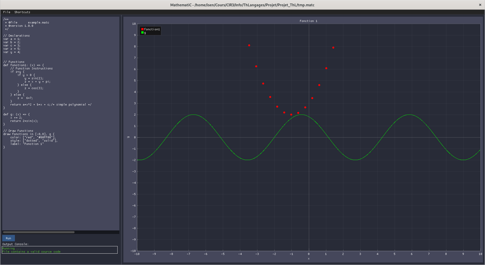

|
MathematiC
A small function visualizer language that supports simple functions and programming
|
|
MathematiC
A small function visualizer language that supports simple functions and programming
|
A small function visualizer langage to be able to quickly draw a Mathematical funtion.
In order to learn how to use it, check the Wiki.

Use commands in the root folder of the cloned repo
Main Program:
Unit Testing:
Generate Documentation for the source code: